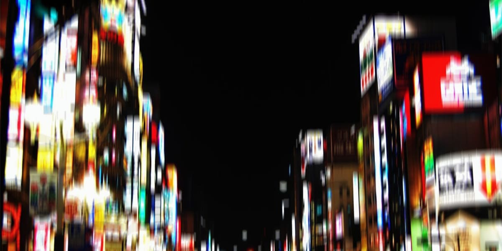

私の愛する家族について
[ キャスター：阿久津 ]
捜査関係者が一様に口を揃えるのは、その "断面" の美しさです。通常、刃物や鋸で人体を切断すれば、骨の破片や組織の引きつれが生じます。しかし、今回の遺体にはそれが一切ありませんでした。
法医学の専門家は以下のような分析結果を出しています。
１. 通常の物理的な刃物で切った際に生じる、細胞が押し潰される痕跡が全く見られない。
２. レーザーメスのように熱で焼き切った形跡もなく、断面のタンパク質が変質していない。
３. 頸椎さえも、まるで水面を切り取ったかのように滑らかに二分されている。
専門家によれば、これは分子間の結合を直接断ち切るような、現代科学では説明がつかない手法である可能性が高いとのことです。
さらに不可解なのは、現場に血が流れた跡がほとんどなかったことです。通常、頸動脈を切断すれば周囲は血の海となります。しかし被害者の体内の血液は、切断面のギリギリのところでピタリと止まっていたといいます。
まるで、最初からそこに頭など存在しなかったかのような、あまりにも不自然な終わり方。
凶器は存在したのか。それとも私たちがまだ知らない "何か" が、あの日あの路地裏を通り過ぎたのでしょうか。捜査は現在も難航中です。
以上、特集でした。

2059/05/01
五日連続の雨だ。
ネオンの光を乱反射させ、視界を濁らせる。体温をじわじわと奪っていくこの雨は街の嫌われ者だった。そして私も、雨が大嫌いだ。
傘を持ってこなかったせいで、ロングコートはたっぷりと水分を吸って重い。ポケットに手を突っ込み、湿りきった煙草の箱を取り出した。中身が無事であることを祈りながら一本咥え、安物のライターを構える。降りしきる雨から火種を守るように、左手で小さな屋根を作った。
ストッパーを押し込み、レバーを叩く。──不発。
もう一度。──不発。
カチャ、カチャという虚しい音が、雨音に掻き消されていく。結局、火が灯ることはなかった。濡れたフィルターの不快な感触だけで、一時的に、ほんの一時的に喫煙欲求を誤魔化す。
私も随分、煙草に依存してしまったな……。
足元に転がった死体を眺めながら、そんなことを考える。さっきは雨が嫌いだと言ったが、公平を期して好きなところも挙げてみよう。
ひとつ、全てを洗い流してくれる。血も、足跡も、ゴミも、感情も。おかげで返り血が服にシミを作る心配をしなくていい。
ふたつ、全てを隠してくれる。銃声、悲鳴、高笑いに怒号。雨音はそれら全てを塗り潰す。おかげで場所を選ばず “罰” を下せる。
みっつ、全ての臭いを消してくれる。生臭い鉄の気配、安物の香水、むせ返るような硝煙。おかげで煙草を吸っても子連れに睨まれずに済む。
雨は裏社会の住人に最高の舞台装置を与えてくれる。これで煙草に火がつき、手元に傘さえあれば文句はなかった。
「大文字さん。大丈夫スか」
唐突に雨が止み、聞き慣れた男の声がした。
「びしょ濡れじゃないスか。その煙草、もう死んでますよ」
雨が止んだわけではない。部下の前城が、自分が濡れるのも構わずに傘をこちらへ差し掛けているだけだった。
「前城、煙草」
「あ、はい」
前城はポケットから半分潰れた箱を取り出し、一本差し出した。
「すんません。俺、今ライター切らしてて……」
「いい」
自分のライターをもう一度取り出し、レバーを弾く。四回目、ようやく小さな火花が意思を持った。深く、紫煙を肺の奥まで吸い込む。居酒屋で酒を煽る年寄りが言う「生き返った」という台詞は、きっとこの感覚のことを指すのだろう。
「……その死体。片付けたほうがいいスかね？」
前城が大文字の背後に横たわる “物” を見て、隠しきれない面倒くささを顔に出した。
「いや、いい。警察への見せしめだ。ここに捨てておく」
「あー、例のサツの犬スか？」
「あぁ」
フィルターの際まで吸い、吸い殻を地面に落とした。鎮火は雨が勝手にやってくれる。全くとことん便利な雨だ。
「で、用件は？ それとも暇つぶしの散歩か」
「あ、そうそう！ 挟腹さんが呼んでますよ。今すぐ来いって。電話が繋がんないから俺が走らされたんスよ」
一瞬、思考が凍りついた。そんな大事な用があるなら真っ先に言え。
「……傘、借りるぞ」
「どーぞどーぞ」
前城と死体を背に、大文字はボスが待つ事務所へと急ぎ足で消えた。残された前城は、土砂降りのネオン街へと消えていった上司の背中をしばらく見送っていた。
「……どうやったら女の力で、こんな真似ができるんだよ」
視線を足元に落とす。そこには頭部のない死体が転がっていた。
「飛び散った血痕もねえ。断面が野菜みたいにスパッと切れてやがる……。大文字さん、マジでバケモンだわ」
・・・
・・・
・・・
ガタつくエレベーターを待つ間も、雨は執拗に体温を奪っていく。道中の露店で買った安物のタオルで髪を拭ったが、気休めにもならない。吸水限界を超えたロングコートは濡れた死体を背負っているかのように重く肌に張り付く。一刻も早く着替えたい。だがあの男、挟腹を待たせることだけは死んでも避けたかった。
一階に降りてきたエレベーターの、古めかしい蛇腹式の鉄扉をこじ開ける。漢字が羅列された五階のボタンを押し、上昇の振動に身を委ねる。数十秒後、機械仕掛けの唸りが止まり、鈍い音を立てて扉が開いた。
執務室へと続く一本の長い廊下は、歩くたびに足音が不気味に響いた。自分の動きが、音を伝って空間全体に漏れ出しているようで落ち着かない。壁には色褪せた極彩色の龍が躍り、天井の蛍光灯は接触不良を起こしているのか、時折パチリと音を立てて瞬いている。廊下の左右に配置された椅子には数人の部下たちが暇そうに煙草を吹かしていたが、私の姿を見つけた瞬間に居住まいを正した。
彼らの視線を背中に受けながら、突き当たりにある重厚な観音開きの扉へと歩を進める。この扉の向こう側だけは、外の喧騒とも、部下たちの安っぽい冗談とも無縁の聖域だ。
扉の前に立ち、三度、控えめにノックする。
「……大文字です」
「入れ」
掠れているが、芯の通った声が返ってきた。扉を押し開けると、そこは街のネオンを拒絶するような、濃密な影に満ちた空間だった。
部屋の隅にある小さな祭壇からは、特有の甘く重い線香の煙が立ち昇っている。黒檀のデスクの後ろ、大きな窓からは雨に濡れた天和の夜景が一望できた。だが主である男はその景色には目もくれず、革張りの椅子に深く身を沈めている。
「おせぇんだよ」
先に待機していた男、挟腹の忠犬こと黒錆が苛立ちを隠さず吐き捨てた。彼は貧乏ゆすりをしながら、こちらを鋭く睨みつける。
「……来たか。随分と濡れたな、大文字」
ボスの挟腹だ。七十を超え、肌は古びた羊皮紙のように乾燥しているが、その眼光だけは濁りを知らない猛禽のそれだった。
「すみません」
短く答え、一礼する。濡れたコートの裾から滴り落ちる雨水が、高価な絨毯の上に黒いシミを作っていく。それを見た挟腹は一瞬眉をひそめたが、すぐに相好を崩した。
「まぁいい。大文字、そこへ座れ」
促されるまま、大文字はソファに腰を下ろした。黒錆からは少し距離を置き、いつでも動けるよう浅く。
「久しぶりにお前たちの顔を見られて、俺は嬉しいよ」
挟腹の言葉には、部下への労いを超えた、自慢のコレクションを眺めるような歪な愛着が混じっていた。
「最近、サツの犬どもがうちに牙を剥いてきているのは知っているな」
挟腹の低い問いに、二人は静かに頷いた。
「四課のみならず、公安二課までもがうちを潰そうと必死だ。……大文字、お前は特にそれを実感しているだろう？」
「はい。先ほどの一件で確信しました。うちに紛れ込んでいる犬は、まだ他にもいます」
挟腹は「うん、うん」と慈しむような動作で深く頷く。表情は一切変わらない。その静寂が、かえって室内を刺すような緊張感で満たしていく。いつの間にか地雷を踏んでいるのではないか、次の瞬間にはこの老人の手によって腹を裂かれるのではないか。そんな予感が、大文字の拳にじっとりと汗を滲ませた。
「このまま内臓を掻き回されるのは癪だ。だから、お前たちに簡単な頼みがある」
組まれていた老人の指が解かれ、節くれ立った右手の人差し指がゆっくりと大文字を指した。
「大文字。例の “契約” は成功したのか」
「はい……条件は完璧です。証拠は一切残らず、誓約に違反した瞬間に “飛びます” 」
先ほど雨の路地裏に転がっていた、あの死体の断面を思い出す。あれは刃物で断たれたものではない。契約という名の不可視のギロチンが、裏切りを検知した瞬間に、標的の頭部をこの世から消滅させたのだ。血飛沫さえ上げる暇を与えず、ただ野菜を断つような無機質な音だけを残して。
「残るのは正体不明の胴体のみ。思考を司る部位は、文字通り露と消えました」
大文字の報告を聞き、挟腹は満足げに、そして酷く下品に口角を吊り上げた。
「……よし、決まりだ。今後はその契約で、下の野郎共を管理しろ」
挟腹の瞳に、ネオンの毒々しい光が宿る。
「次、黒錆。お前には下に紛れ込んでいる犬どもを狩ってほしい。探すのは沙霧に任せてある。だからお前はただ狩るだけでいい。できるな？」
隣に座る黒錆は「……了解しました」と低く、だがどこか弾んだ声で応じる。その返答に、挟腹は満足げに目を細めた。
「いい、実にいい。やはり俺はお前たちが大好きだよ。手元に置くなら、暴力の味を骨の髄まで知っている頭のいいガキに限るな」
挟腹はそう言って、大文字と黒錆、二人の頭を撫でるべく手を伸ばした。シミの浮いた老人の手が、愛おしそうに二人の髪を、あるいは頬を撫でる。その手つきは、慈しみというよりは血筋のいい軍用犬の毛並みを確かめるブリーダーのそれだった。
大文字はその指先が首筋に触れるたび、言いようのない悪寒が背筋を走るのを感じる。しかし拒絶は死を意味する。石像のように動かず、ただ “父” の愛撫を受け入れた。
「期待しているよ。……さあ、帰っていい。冷えないうちに温かいシャワーでも浴びなさい」
その言葉を合図に、二人は静かに立ち上がり、深々と一礼して聖域を後にした。
重厚な扉が閉まり、静寂が廊下に溢れる。二人の足音が、今度は逃げるように廊下に響いた。エレベーターに乗り込み、鉄扉が閉まって一階のボタンが押された瞬間、隣にいた黒錆が舌打ちと共にポケットから煙草をひったくるように取り出した。ふぅと口から吹いた火で着火する。エレベーターという密室に、一瞬で煙草の臭いが充満した。
大文字は前を向いたまま何も言わない。先ほど挟腹に撫でられた頬が、まだ不快な熱を持っている。
やがて一階に到着し蛇腹の扉が開いた。外は相変わらずの土砂降りだ。
「おい、大文字」
黒錆が煙を吐き出しながら、濡れたネオンの街を睨みつけて言った。
「お前が万が一サツの犬だった場合、俺は容赦なく殺しに行くからな」
大文字は視線すら向けず、雨の中に一歩踏み出した。
「ご勝手にどうぞ」
「……チッ、可愛くねえ女」
二人はそれ以上言葉を交わすことなく、別々の方向へと歩き出す。一人はネオンの光が滲む雑踏へ。もう一人は闇の深い路地裏へ。止まない雨が、二人の足跡と、先ほどまで漂っていたわずかな温もりを無慈悲に洗い流していった。
・・・
・・・
・・・
・・・
・・・
契約：右手の小指と小指を交わし、契約内容を唱える事によって成立する呪い。契約内容に制限は無く、お互いの同意があれば後は指を交わすだけ。契約内容に違反した場合、違反者の契約を交わした指が無くなる。
・・・
・・・
・・・
・・・
・・・
帰宅し、鉛のように重くなったコートを洗濯機に放り込む。濡れたワイシャツも脱ぎ捨て、頬に残ったあの熱を剥ぎ取るように、大文字は頭からシャワーを浴びた。
熱い湯気が視界を白く染めるが、思考までは温まらない。
最近入った新入りは、正確に何人だ……？
まだ契約を交わしていないのは……？
私は、これまで一体何人を呪ってきた？
脳裏を過るのは数え切れないほどの小指の感触。そんな事はどうでもいい。優先すべきは新入りとの契約だ。一人残らず小指を絡め、呪いにも似た誓約を脳に刻み込む。それを人数分。作業的で、酷く精神を削る儀式。だがやるなら早い方がいい。挟腹の気まぐれな “愛” が、いつ新たな殺戮を命じてくるか分からない。事態が急変してからでは取り返しのつかないことになる。
明日、地下の集会所に全員集めるか。
シャワーを止め、鏡に映る自分の顔を見る。ネオンの光がない場所では、驚くほど生気のない女がそこにいた。
濡れた体を乱暴に拭きながら、スマートフォンを手に取る。兄貴分と呼ばれる立場の部下たちへ『明日、地下に全員集めろ』と一斉送信を済ませた。
指先ひとつで、また数十人の命に安全装置という名の爆弾を仕掛ける手配が終わる。今日やるべきことはこれで全てだ。
ふと、喫煙欲求が鎌をもたげた。大文字は無意識に立ち上がり、洗濯機に放り込んだコートの方へ足を向け、そして苦く笑って足を止めた。
そうだった。あの煙草は、雨に殺されてもう使い物にならないんだった。
「……最悪だ」
部屋には線香の匂いも、硝煙の臭いもない。ただ自分の体から立ち昇る石鹸の香りと、換気扇が回る虚しい機械音だけが静まり返った部屋に響いていた。
・・・
・・・
・・・
・・・
・・・
2059/05/02
前城は突然の呼び出しに苛立つ新人を連れ、地下倉庫へと足を踏み入れた。広大な空間には前城と同じ中堅の兄貴分たちと、その手下が数人ずつ。漂うのは正体の知れない緊張感と、湿ったコンクリートの匂い。
この空気、かつて大文字と交わした小指の感触。前城はそれをどこか懐かしく思い返していた。
「前城さん。これ、何の集まりなんですか？」
連れてきた新入りの一人、菜箸が怯えた様子で袖を引く。前城は煙草を指に挟んだまま、事も無げに答えた。
「お前らが家族になるための儀式だよ。心配すんな、俺たちの仲間である限りは、な」
菜箸はいまいち理解できないようで目を泳がせている。もう一人の新人、赤田も緊張で拳を固く握りしめていた。
大文字さん、態度はそんなに怖い人じゃないんだけどな。
前城が煙草を吸いきったその時、地下の影から彼女が現れた。昨夜の激務を感じさせない、剃刀のように鋭い佇まい。
「初めましての奴もいるだろう。管理を担当している大文字だ。今回集めたのは、お前たちが正式に組織の一員となるための契約を行うためだ。深く理解する必要はない。……新入りは一列に並べ」
逆らう者などいない。ひよっこたちは蛇に睨まれた蛙のように素直に列を作った。それを前城のように微笑ましく眺める者もいれば、退屈そうに睨む者もいる。
「小指を出せ」
大文字の冷徹な声が響く。先頭の男が震える小指を差し出した。大文字は幼子の指切りげんまんをなぞるように、その指を絡める。
「私の言葉をなぞれ。──私は父の家族となり、父の意志を我が全霊とする。もし家族を裏切れば、この頭をヤミに捧げる。……言え」
「わ、私は父の家族となり、父の意志を、わが全霊とする。もし、家族を裏切れば、この頭を、ヤミに捧げる……」
繋がれた小指に一瞬だけ力が入り、そして離された。男は言葉の意味も分からず、迷子の子供のような顔をして列を外れた。
儀式は淡々と繰り返される。大文字の美しい声が地下倉庫に反響し、男たちがそれを鸚鵡返しにする。自分が呪いという名の首輪を嵌められているとも知らずに。
そして、前城の連れてきた赤田の番が来た。赤田も同じように小指を交わし、震えながら誓約を口にする。
「……この頭を、ヤミに捧げる」
言葉が終わった刹那、音が消えた。血飛沫も、断末魔もない。ただ赤田の肩から上が、消しゴムで消されたように消失した。
「あっれ？」
絶句する周囲、短く上がる悲鳴。その中で、前城の口から出たのはそんな情けない三文字だった。大文字は瞬きひとつしない。
「……裏切り者の末路だ。記憶に刻んでおけ。次、来い」
死体を片付けることすら許さず、彼女は儀式を続行した。やがて全員が呪縛を終え、解散が告げられた後、前城と菜箸だけが大文字に呼び止められた。
「これ、お前が連れてきた奴だな？」
大文字が頭部のない肉塊を指差す。
「そう……っスね、はい。すんません、俺の目が節穴でした」
「責任を持ってお前らが片付けろ。これ以上、私に手間をかけさせるな」
鋭い舌打ちを残し大文字は去っていった。地下倉庫には変わり果てた赤田と、取り残された二人の男。
「はぁ〜……。どっかにヤミ開いてねえかなぁ」
「前城さん。こいつ、一体何が起きたんですか……？」
楽に死体を処理したくてヤミをキョロキョロ探す前城に、菜箸が動揺した声をぶつける。
「あぁ？ …お前、契約って分かるか？」
「はい、一応は……」
「じゃあ話は早い。こいつはサツの犬か、あるいは契約する前から裏切りを考えてたクソ野郎だったんだよ。その思考が違反と見なされて、頭がどっかに飛ばされちまった。お前も俺も、ボスを裏切ればこうなる」
菜箸の顔がさらに土気色に染まる。前城は構わず、最後の一本に火をつけた。
「契約に終わりはねえ。長生きしたきゃ覚えておけ。俺たちはこれから死ぬまで “家族” で ”仲間” だ。……そういう言葉に呪われながら、生きていくんだよ」
・・・
・・・
・・・
・・・
・・・
2059/05/08
一階に降りてきたエレベーターに乗り込むと、鼻を突くヤニの臭いが残っていた。この箱はいつもそうだ。地味にボロく、上昇するたびに嫌な悲鳴を上げ、そして常に煙臭い。犯人はどうせ黒錆だろう。この建物を出入りする面々の中で、数十秒の上下移動すら我慢できない重度のヤニカスはあいつくらいなものだ。
五階に辿り着き、妙に音の響く見慣れた廊下を奥へ進む。重厚な扉を三度叩くと、内側から短く、氷のように冷たい許可が飛んできた。
「失礼します」
「遅いぞ、沙霧」
部屋に入るなり低い声が鼓膜を打つ。
「勘弁してくださいよ。これでも結構、飛ばして来たんですから」
若頭の沙霧は湿気でうねった髪をガリガリと掻きながら言った。部屋を見渡すが、そこには老人の影がひとつあるきり。
「あれ、黒錆の野郎はいないんですか？」
「あいつは呼んでいない。……なんだ、会いたかったのか？」
「まさか。エレベーターの中が煙草臭かったんで、てっきり先客かと思いまして」
「煙草か。……それは、俺のだな」
挟腹は極めて当たり前のような顔をして微笑んだ。あんたもヤニカスかよ、と内心で派手な舌打ちをかます。だが表向きは愛想笑いのひとつも崩さないのが、この組織で生き残るための最低限のマナーだ。
挟腹は目の前の革張りのソファを顎でしゃくった。
「……座れ」
その一言には抗いがたい強制力がある。この男はどんなに短い用件であっても、必ず相手を座らせる。それは対等な対話を求めているからではない。主人が飼い犬にお座りを命じるのと全く同じ種類の支配欲だ。
沙霧は内心の毒を飲み込み、促されるままソファに腰を下ろした。深々と沈み込む座面が、まるで逃げ道を塞ぐ泥濘のように感じられる。
「で。今回は何の用ですか」
一刻も早くこの場を辞したい沙霧は、本題を急かすように身を乗り出した。
「ほら、最近新入りがかなり入って来ただろ？ それにお前たちと顔を合わせる機会も少なくなっていた。そこでだ……俺は近いうちに、組全員を集めて宴を開こうと思っている」
「宴……ですか？ しかも全員で」
沙霧は思わず声を潜めた。
「リスクがデカすぎませんか。このご時世、一箇所に固まるなんてのは……」
「そうだよな。うん、うん。お前ならそう言うと思ったよ」
満足げに頷く挟腹に、沙霧は自分の思考を完全に透かされているような不快感を覚える。危うく漏れそうになった舌打ちを奥歯で噛み殺した。
「サツの動きも厳しくなっている今、集まるのは危ない。……そう言いたいんだろう？ もちろん、そんなことは百も承知だ。だがな、沙霧。俺がただ飯を食い、酒を飲むためだけに、わざわざリスクを冒してまで家族を集めると本気で思っているのか？」
「……いえ。では、何か別の目的が？」
挟腹はシワの刻まれた口角を吊り上げてニヤリと笑った。その不気味で下衆な笑みは、老人のそれというよりは、獲物を前にした爬虫類のようだった。
「大文字には、既に契約の内容を変えるよう命じてある。その新しい契約を利用して、宴の場で裏切り者を一人残らず炙り出す」
ボスの意図を汲み取った瞬間、沙霧の口から重いため息が漏れた。大文字が地下で始めているあの呪い。つまりこの老人は、賑やかな宴の席で、仲間の目の前で裏切り者の頭を飛ばしてみせるつもりなのだ。見せしめという名の、最悪な余興。
「……なるほど。では、俺を呼んだのは」
「お前には会場の準備と手配を任せたい。ほら、沙霧はそういう裏方が得意だろう？」
この男は極度の電話嫌いだ。話すなら相手の目を見て話したいという、古臭い主義。それが礼儀なのか、それとも文明の利器に追いつけないだけの老害なのかは定かではないが、どちらにせよわざわざ前触れもなく呼び出し、膝を突き合わせて伝えるような内容じゃない。
「……了解しました。最高に派手で、最高に血の臭いのしない場所を用意しますよ」
沙霧の皮肉混じりの返答に、挟腹は「期待しているぞ」と慈しむように目を細めた。その瞳には、やはり相手を一人の人間としてではなく、手入れの行き届いた駒として眺めるような冷徹な光が宿っている。
「じゃあな。……ああ、それと沙霧。次に来る時は、もう少しマシな香水をつけてこい。エレベーターのヤニ臭さが身体に移っているぞ」
最後までこちらの神経を逆撫でするボスの言葉を背中で聞き流し、沙霧は一礼して部屋を出た。
扉が閉まった瞬間、彼は肺に残っていた濁った空気をすべて吐き出した。廊下を歩きながらスマートフォンを取り出す。宴の会場、参加者のリスト、そして血飛沫の処理班。考えるべきことは山積みだ。
「宴、ねえ……」
どいつもこいつも、呪いにかかりすぎて頭がイカれてやがる。
パチリ、と天井の蛍光灯がまた一つ、頼りない音を立てて瞬いた。
・・・
・・・
・・・
・・・
・・・
2059/05/12
宴当日。
朝一番、組員たちのスマートフォンが一斉に震えた。送られてきたのは、宴の開催通知と会場の座標のみ。事前予告なしの抜き打ちだ。
メッセージの末尾には、ボスの歪な筆致を思わせる無機質な脅迫が添えられていた。
『遅刻は裏切りと見なす』
その一文を確認した者は皆、文字通り血相を変えて準備に取り掛かった。ある者は女を放り出し、ある者は取引を中断し、ネオンの下を這いずるようにして指定された場所へと集結した。
大文字が会場の大型中華飯店に到着した頃には、すでに熱気と冷気が混ざり合った異様な空気が完成していた。円卓が並ぶ広間には、組織の末端から幹部までが勢揃いしている。
大文字は視線を走らせる。壁際で苛立たしげに貧乏ゆすりをする黒錆、そして入り口付近で部下に厳しい指示を飛ばしている沙霧。二人の表情も今日ばかりは硬い。そして部屋の最奥。上座に鎮座する挟腹は、毒々しい赤の提灯に照らされながら、満足げに目を細めていた。
「大文字、こっちへ来い」
挟腹の声に導かれ、彼女はボスの隣へと歩を進める。そこには主賓席であるにもかかわらず、周囲の誰もが恐れて近寄れなかった、不自然にぽっかりと空いた席があった。大文字は無言でそこに腰を下ろす。隣から漂うのは、線香と、そしてあの忌々しいヤニの臭いだ。
やがて開始時刻が訪れた。会場の重厚な扉が沙霧の手によって閉ざされ、錠が下ろされる。逃げ場はなくなった。
挟腹がゆっくりと立ち上がり、手元の紹興酒が入ったグラスを高く掲げた。喧騒は一瞬で凪ぎ、数百人の組員たちが、文字通り息を殺して老人を仰ぎ見る。
「よく集まった、我が家族たちよ。……今日は素晴らしい日だ。外は相変わらずの雨だが、この中だけは温かい。こうして全員で杯を交わせる幸せを、私は噛み締めている」
挟腹の声はどこまでも優しく、慈愛に満ちていた。だがその眼光は一人一人の首筋をなぞるように、冷たく這い回っている。
「だが、悲しい知らせもある。この幸せな家族の中に、泥を塗る不届き者が混じっているようだ。……そこでだ。今夜は、その汚れを洗い流すための清めの儀式も兼ねることにした」
挟腹は大文字の肩にポン、と枯れ木のような手を置いた。
「さあ、始めようか。命がけの晩餐を」
挟腹は掲げたグラスをゆっくりと下ろし、会場全体を舐めるように見渡した。彼の合図ひとつで、給仕たちが一斉に冷えた料理を運び始める。だが並べられた豪華な中華料理に箸を伸ばす者は一人もいない。
「さて。飯を食う前に、家族としての誓いを改めて確認しようじゃないか」
挟腹はそう言って、隣に座る大文字に視線を送った。彼女は無言で立ち上がり、壇上の端へと進む。その手には、昨日まで数百人の小指を絡め取ってきた、あの無機質な冷徹さが宿っていた。
「全員、起立」
大文字の短く鋭い号令に、地響きのような音を立てて組員たちが立ち上がる。挟腹は満足げに頷き、枯れた声を張り上げた。
「大文字がこれから言う言葉を、全員で唱和しろ。……声が小さい奴、あるいは口を閉ざしている奴は、家族としての資格を自ら捨てたと見なす。いいな？」
その瞬間、広間に走った戦慄。資格を捨てる──それが何を意味するか、この場にいる全員が理解していた。
「……唱和しろ」
大文字が冷たく言い放つ。
「私は父の家族であり、その意志に背くことはない。もし私が偽り者であれば、この頭を闇に捧げる。……始め」
「私は、父の家族であり、その意志に背くことはない！ もし私が偽り者であれば、この頭を、ヤミに捧げる…！」
数百人の男たちの怒号が中華飯店の高い天井を震わせた。 必死だった。隣の奴より大きな声を出し、自分が家族であることを証明しようと、皆が血管を浮き上がらせて叫ぶ。
大文字はその光景を、感情の消えた瞳で見つめている。彼女だけには見えていた。唱和の声が重なるたび、会場を満たす空気が変質していくのが。数百本の小指から伸びた見えない糸が、今まさに、一人ひとりの首筋に不可視の刃を突き立てようとしている。
「……もう一度」
大文字の冷酷な追い打ち。
「私は父の家族であり、偽り者ではない。……言え」
「私は父の家族であり、偽り者ではない！」
二度目の唱和。その声が最高潮に達し、静寂が戻ろうとしたその刹那。会場のあちこちで、ガタリと椅子が倒れる音がした。悲鳴すら上がらない。ただ隣にいたはずの男の肩から上が、唐突に消えた。
一人、二人、三人。家族と叫んでいたはずの男たちが、首から上を失った無残な肉塊へと変わり、円卓の上に、床の上に、次々と崩れ落ちていく。挟腹はその光景を、特等席から眺めていた。
「ああ……素晴らしい。やはり雨の日は、こうして掃除をするに限る」
彼は倒れた肉塊を見向きもせず、手元の紹興酒を一口飲み干すと、愉快そうに大笑いした。
やがて狂気を含んだ静寂が訪れ、会場には挟腹の満足げな笑い声だけが響き渡った。
「よし。これで、ここに残ったのは正真正銘、俺の家族だけだ。……では、早速食事を楽しもうじゃないか。乾杯！」
ボスの号令に合わせ、生き残った者たちの震える手でいくつものグラスが掲げられ、そして無理やり胃の奥へと流し込まれた。今更、酒の味など分かりはしない。さっきまで言葉を交わしていた元家族だった肉塊の横で、脂ぎった中華料理を口に運んで美味しいわけがなかった。こんな空気では、どれほど強い酒を煽っても酔いなど回りゃしない。ただ全員が挟腹の機嫌を損ねないように、そして一刻も早い解散を願って、黙々と箸を動かした。
ふと大文字が視線を上げると、そこには地獄を絵に描いたような光景が広がっていた。
「うまっ」
黒錆が、血の臭いが立ち込める中で平然と料理を口に運び、下品に咀嚼している。ボスの挟腹に至っては、まるで愛する子供たちに囲まれた誕生会でもあるかのように、頬を紅潮させて美食に舌鼓を打っていた。 一方で沙霧は、虚空のどこか一点を見つめながら、毒でも煽るような手つきで酒をチミチミと口に含んでいる。その横顔には隠しきれない嫌悪と、諦念が張り付いていた。
狂っている。
大文字は冷めた目で、その光景を脳に焼き付ける。殺した張本人である自分も含めて、この円卓を囲む者たちは皆、等しく狂気に冒されている。ボスの歪な愛を注がれ、それに怯え、あるいは酔いしれながら、死体の隣で飯を食らう。人としての何かを、とうの昔に雨に流してしまった獣たちの晩餐だ。
不意に、喉の奥が焼けるような感覚に襲われる。大文字は手元のグラスを煽り、酒精で無理やりその不快感を押し流した。
宴はまだ、始まったばかりだ。